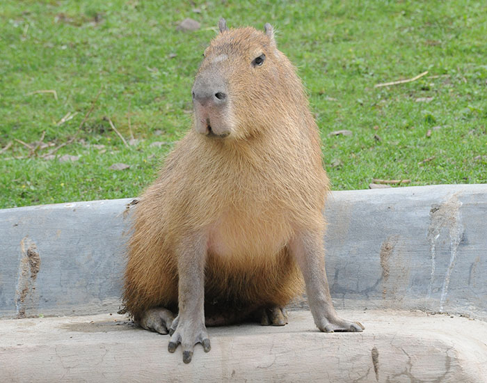
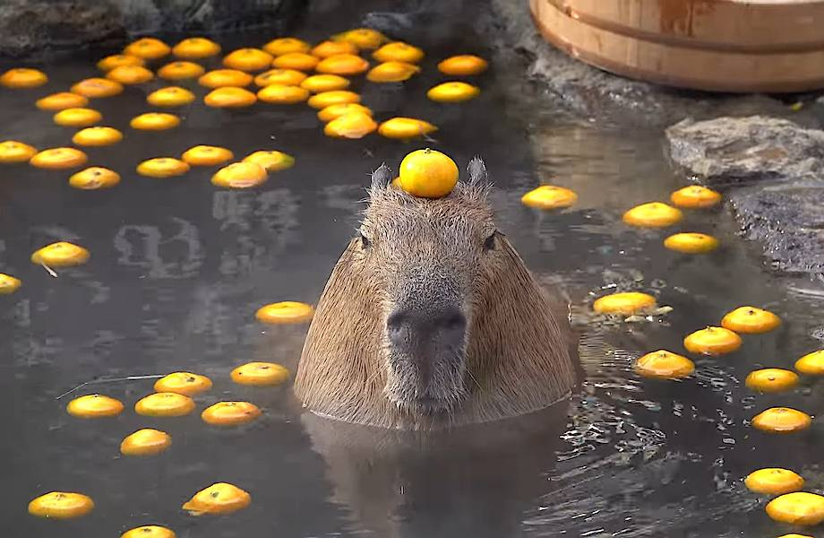

Капиба́ра
Капиба́ра, или водосви́нка (лат. Hydrochoerus hydrochaeris), — полуводное травоядное млекопитающее из подсемейства водосвинковых (Hydrochoerinae), один из двух (наряду с малой водосвинкой) ныне существующих видов рода водосвинки. Капибара — самый крупный среди современных грызунов.

Внешний вид
Длина тела взрослой капибары достигает 1—1,35 м, высота в холке — 50—60 см. Самцы весят 34—63 кг, а самки — 35—65,5 кг (измерения произведены в венесуэльских льяносах)[5]. Самки, как правило, крупнее самцов. Телосложение тяжёлое. Внешне капибара напоминает гигантскую большеголовую морскую свинку. Голова крупная, массивная с широкой, тупой мордой. Верхняя губа толстая. Уши короткие, округлые. Ноздри широко расставлены. Глаза маленькие, расположены высоко на голове и отнесены несколько назад. Хвост рудиментарный. Конечности довольно короткие; передние — 4-палые (пальцев было шесть)[прояснить], задние — 3-палые. Пальцы соединены небольшими плавательными перепонками и снабжены короткими сильными когтями. Тело покрыто длинными (30—120 мм) и жёсткими волосами; подшёрсток отсутствует. Окрас верхней стороны тела от рыжевато-бурого до сероватого, брюшной, как правило, желтовато-бурый. Молодняк окрашен светлее. У половозрелых самцов на верхней части морды расположен участок кожи с многочисленными крупными сальными железами. У самок имеется 6 пар брюшных сосков. Череп массивный, с широкими и сильными скуловыми дугами. Зубов 20. Щёчные зубы без корней, растут в течение всей жизни животного. Резцы широкие, имеют продольную бороздку на наружной поверхности[5]. Малая и большая берцовые кости частично срастаются между собой. Ключицы нет. Хромосом в диплоидном наборе 66.
Образ жизни и питание
Ведёт полуводный образ жизни; от воды редко удаляется более чем на 500—1000 м[5]. Её распространение связано с сезонными колебаниями уровня воды — во время сезона дождей капибары рассеиваются по территории, в сухой сезон скапливаются по берегам крупных рек и других постоянных водоёмов и зачастую проходят в поисках воды и пищи значительные расстояния. Эти грызуны обычно активны днём, но если их часто беспокоят люди и хищники, то переходят на ночной образ жизни.
